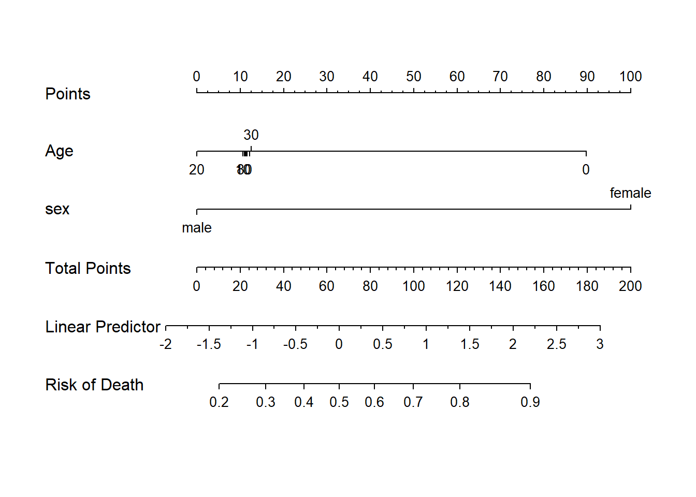
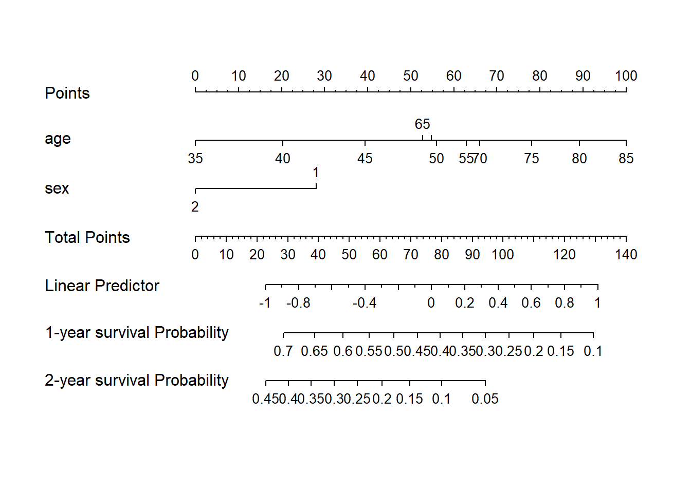

library(rms)
# 逻辑回归数据
#getHdata(titanic3)
#save(titanic3, file = "./datasets/titanic3.rdata")10 样条回归列线图绘制
前面详细介绍了二分类资料和生存资料的列线图绘制，下面给大家介绍RCS（限制性立方样条）的列线图怎么画
限制性立方样条在实际使用时只是作为一种对变量进行转换的方法，所以不管是逻辑回归还是cox回归都是可以使用RCS这种方法的。
为了给大家介绍限制性立方样条这个方法，我之前给大家介绍了4篇推文：
RCS的列线图其实很简单，直接用rms包即可搞定，只要是rms支持的模型，都是可以绘制列线图的！
下面分别演示逻辑回归和COX回归的RCS的列线图绘制。
10.1 逻辑回归的RCS列线图
建立逻辑回归模型：
# 加载数据
load(file = "./datasets/titanic3.rdata")
# 使用rms前先把数据打包
dd <- datadist(titanic3); options(datadist='dd')
# 逻辑回归的立方样条，对age这个变量做样条变换
f <- lrm(survived ~ rcs(sqrt(age),5) + sex, data=titanic3)
#f下面直接画图即可，没有任何难度，因为rms这个包把一切都给你做好了，不用自己操心，如果你做临床预测模型，是不可能绕开这个包的。
nom <- nomogram(f, fun=plogis, funlabel="Risk of Death")
plot(nom) 
这样RCS的列线图就画好了，关于一些参数的意义和细节的美化，可以参考前面的文章，这里就不多说了。在图中Age这个变量的线条有一些拥挤，这就是样条变换的原因，它需要给你计算分数，所以就挤到一起了，这是rms自动帮你搞的，很方便。
既然逻辑回归没问题，那COX回归自然也是没问题的！
10.2 COX回归RCS的列线图
准备一个生存数据，就用survival自带的肺癌数据：lung
rm(list = ls())
library(survival)
# 打包数据
dd <- datadist(lung)
options(datadist = "dd")构建cox比例风险模型：
coxfit <- cph(Surv(time, status) ~ rcs(sqrt(age),5) + sex,
data = lung, x=T,y=T,surv = T
)
# 构建生存函数，计算生存率，注意你的最大生存时间
surv <- Survival(coxfit)
surv1 <- function(x) surv(365,x) # 1年OS
surv2 <- function(x) surv(365*2,x) # 2年OS
# 画图
nom <- nomogram(coxfit, fun = list(surv1,surv2),
funlabel = c('1-year survival Probability',
'2-year survival Probability')
)
plot(nom)
这就是COX回归RCS的列线图，是不是很简单？
因为是演示数据，所以画出来的图不是很美观，但是实现方法就是这么简单！只要是rms包支持的方法，都可以绘制列线图。